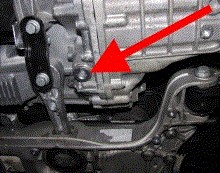

Checking oil level
This function is used to check the oil level in the transmission.
Note:
Only use manufacturer-approved oil.
To facilitate the oil filling, the manufacturer adapter set VAS 6262 and 6262/2 or equivalent can advantageously be used.
Test conditions:
Transmission oil temperature between 35-45 °C when starting the check.
Engine idling.
The car must be level on the lift.
The silencer under the engine dismounted.
Gear selector in position P.
Procedure:
Start the function.
Follow the instructions in the program.
Checking the oil temperature is performed automatically.
Unscrew the on the picture highlighted level plug.
A small amount of redundant oil will drain out from the level pipe, as this fills while driving.
If it continues to drip after the redundant oil has drained out, the level is OK.
If no oil flows out from the level pipe, fill with 1 liter oil and perform a level check again.
